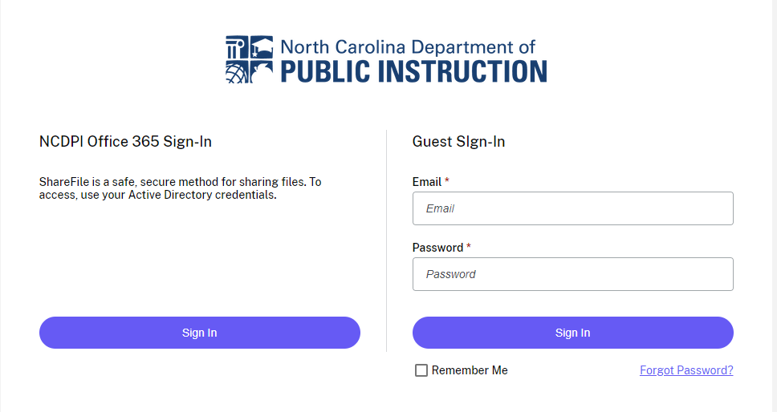
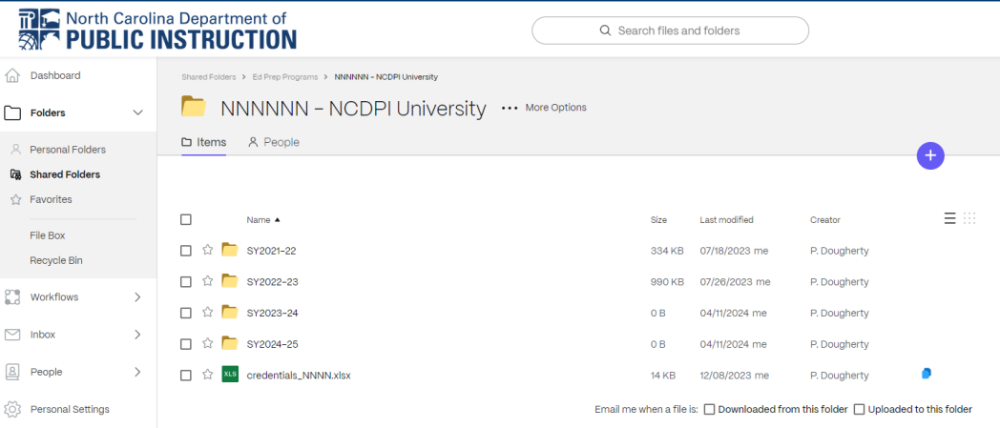
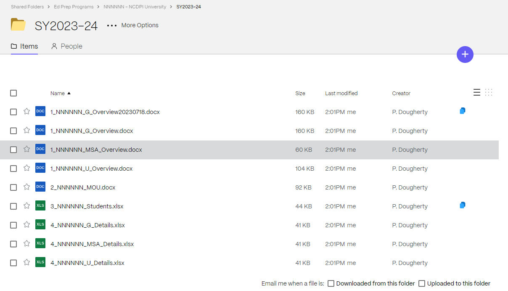

EPP Performance Reporting Process Guide 2025–2026 reporting cycle · NCDPI Educator Preparation Team
This guide explains the steps each Educator Preparation Program (EPP) follows to submit performance reporting data to the NC Department of Public Instruction (NCDPI) for the 2025–2026 reporting cycle. It covers the components you will submit, the templates and data specifications for each, and how to use the secure ShareFile system to exchange documents with NCDPI.
NEW 2025-26 Content marked with the red NEW 2025-26 badge and dark red text is new or revised this year. Returning users can scan for the badge to find what has changed since last year.
A. Purpose
The EPP performance reporting process is designed to:
- Meet expectations outlined in state board policy and legislation, national accreditation, and Title II reporting.
- Provide a process that is easy to follow and useful to EPPs.
- Improve efficiencies within DPI — producing data for each EPP, reducing error, and standardizing the process.
NEW 2025-26 B. New reporting requirements overview
Every item in this section is new or revised for the 2025–2026 reporting cycle.
- DPI will strictly enforce the deadlines for each reporting component this year to streamline processing and improve efficiency. To support this, DPI will increase deadline communication through GovDelivery emails and the monthly EPP webinars. Please plan ahead:
- Make sure everyone in your EPP who needs deadline notifications is subscribed to GovDelivery. To add or remove colleagues, email andrew.sioberg@dpi.nc.gov with the changes.
- If something arises during the reporting season that may keep you from meeting a deadline, contact andrew.sioberg@dpi.nc.gov as soon as you are aware of it.
- Attend the monthly EPP webinars to stay current with reporting expectations and to ask questions or raise concerns as they emerge.
- A new optional column on the student characteristics template captures an EPP’s own institutional ID for the candidate (Column J). Several programs told us this would help with their internal data management. Populating it is optional.
- The Date of Birth column has been split into three columns (F Day, G Month, H Year) to reduce errors caused by submissions that inadvertently swap day and month.
- A new column (P) captures whether the candidate’s program is a residency program (yes/no). This is especially useful for graduate-level residency candidates.
NEW 2025-26 Table 1: Performance reporting components and submission deadlines
| Step | Description | Due |
|---|---|---|
| 1. DPI stages data for EPPs in ShareFile | DPI provides templates and historical / prior-year data where available. | 06/01/2026 |
| 2. Overview and narrative responses | Previous year’s information provided in Word on the secure folder (1_NNNNNN_Overview.docx). | 07/02/2026 |
| 3. One example MOU with a partnering district for student teaching | Submit an MOU executed between 08/01/2025 and 07/31/2026. | 07/02/2026 |
| 4. EPP applicant submission | Submit all applicants to your program between 08/01/2025 and 07/31/2026 (5_NNNNNN_Applicants.xlsx). | 08/03/2026 |
| 5. Student characteristics submission | Submit all students in your program between 08/01/2025 and 07/31/2026 (3_NNNNNN_Students.xlsx). | 08/28/2026 |
| 6. Program details and service to public schools | Submit faculty count, field supervisors, and service-to-schools details for 08/01/2025–07/31/2026 (4_NNNNNN_[U,G,MSA]_Details.xlsx). | 08/28/2026 |
| 7. Data validation | DPI reviews steps 4, 5, and 6 and works with EPPs as needed for completeness, corrections, and refinement. | Sept/Oct 2026 |
| 8. DPI adds effectiveness data | DPI joins effectiveness data to the EPP student data. | Dec 2026 |
| 9. Overall data check with EPPs | EPPs review their restricted-access dashboards for accuracy. Where misalignment exists, DPI works with the EPP to align. | Dec 2026 / Jan 2027 |
| 10. Board approval | Materials are presented to the State Board of Education. | Feb / Mar 2027 |
Each step applies to undergraduate, master’s, and MSA programs, with two exceptions:
- Service to public schools is not required for master’s programs.
- The student characteristics file your institution receives includes students in undergraduate, graduate, and MSA programs (where applicable) and covers all programs that lead to a license at your EPP.
C. Performance reporting components
Refer to Table 1 for due dates.
After every uploadEmail andrew.sioberg@dpi.nc.gov to confirm that your file is ready for processing. This applies to every reporting component — the overview and narrative responses, the MOU example, the applicant submission, the student characteristics file, and the program details file.
C.1 DPI stages data for EPPs in ShareFile
By June 1, 2026, DPI will populate each program’s ShareFile folder with the templates and prior-year submissions needed to compile your 2025–2026 data. If we are able to stage these documents earlier, we will notify the field by email through GovDelivery to deans and program leads.
C.2 Overview and narrative responses to legislative requirements
Some required information changes little year to year, so this section is pre-populated with your previous year’s submission as a starting point. You will receive one Word document per program level your EPP offers (undergraduate, graduate, MSA), located on ShareFile and named 1_NNNNNN_Level_Overview, where NNNNNN is your six-digit federal institution code and Level is one of U, G, or MSA.
Undergraduate programs answer a broader set of questions than graduate or MSA programs.
Undergraduate program steps
- Download your previous year’s overview and narrative files from ShareFile (see Section D).
- Carefully review the previous year’s responses and update them as needed. Common items to revisit are enrollment numbers, programs offered, and overarching strategies.
- Save your work as a Word document and upload it back to ShareFile.
Graduate and MSA program steps
- Download your institution’s overview file(s) from ShareFile (see Section D).
- Carefully review and update the previous year’s responses. Only the Overview and Special Features sections need to be addressed.
- Save your work for your records and upload the completed document back to ShareFile.
DueAny time between receipt and July 2, 2026.
C.3 MOU example
Upload one current MOU with an LEA for the undergraduate program to ShareFile alongside the narrative response. You do not need to submit an MOU for every LEA — one example is sufficient.
NCACTE has developed a common MOU template for EPPs. Using it is not required, but it is a thoughtful starting point if you are creating a new MOU or refreshing an existing one. We strongly encourage everyone to review it for gaps in their own MOU coverage. The document is on the NCDPI Educator Preparation FAQ & Updates page. Thanks to NCACTE for the work they put into this resource.
Save the document to the secure folder as a Word document with the file name 2_NNNNNN_MOU_DDMMYYYY, where NNNNNN is your six-digit federal institution code and DDMMYYYY is the submission date. The date helps when there are multiple versions in the secure folder.
DueAny time between receipt and July 2, 2026.
C.4 EPP applicant submission
State law requires NCDPI to report on Teach NC’s impact on attracting candidates to teaching. To support this, each EPP’s ShareFile folder includes an applicant template (5_NNNNNN_Applicants.xlsx) for individual-level applicant data.
The reporting period is August 1, 2025 – July 31, 2026. Provide all applicants to your EPP during that window.
- Locate the applicant template in your ShareFile folder under
SY2025-26:5_NNNNNN_Applicants.xlsx. - Populate the data for each applicant according to Table 2 below.
- Upload the completed file to ShareFile on or before August 3, 2026 and email andrew.sioberg@dpi.nc.gov to confirm submission.
NoteInclude applicants to your EPP only, not to the institution overall.
Table 2: Data specifications for the applicant template
NEW 2025-26 Red text indicates a field that is new or changed for the 2025–2026 reporting cycle.
| Variable | Permitted values | Description | Required | Example |
|---|---|---|---|---|
| EPP Code | NNNNNN | Six-digit institution code | Y | 002945 |
| SSN | NNNNNNNNN | Applicant’s social security number | Y | 000000000 |
| First name | Character | Applicant’s first name | Y | Sara |
| Last name | Character | Applicant’s last name | Y | Johnson |
| DOB Day | DD | Applicant’s day of birth | Y | 11 |
| DOB Month | MM | Applicant’s month of birth | Y | 6 |
| DOB Year | YYYY | Applicant’s year of birth | Y | 1900 |
| Application Month | MM | The month the application was received | Y | 7 |
| Application Year | YYYY | The year the application was received | Y | 2025 |
| Accepted | Y, N | Whether the applicant was accepted | Y | N |
| Accepted Month | MM | The month the applicant was accepted | Y | 9 |
| Accepted Year | YYYY | The year the applicant was accepted | Y | 2025 |
| Ethnicity | B, I, A, H, P, W, M, N | (B) Black; (I) American Indian / Alaskan Native; (A) Asian; (H) Hispanic; (P) Pacific Islander; (W) White; (M) Multiple Races; (N) Unknown | Y | H |
| Gender | F, M, O | (F) Female; (M) Male; (O) Other | Y | M |
| Email address | Alphanumeric | Applicant’s personal email address | Y | dave.smith@gmail.com |
| Degree | U, ULO, R, G, GLO, GFA, GSA, GNA | Type of degree pursued: (U) Undergraduate; (ULO) Undergraduate Licensure Only; (R) Residency; (G) Graduate degree in non-teaching areas; (GLO) Graduate Licensure Only (no degree, non-degree-seeking); (GFA) Graduate degree and first license; (GSA) Graduate degree to upgrade in a license area already held; (GNA) Graduate degree in a new license area added to existing license | Y | GLO |
C.5 Student characteristics
The student characteristics Excel file contains information for all programs your institution offers (undergraduate, graduate, and/or MSA). It captures self-reported descriptive information about students enrolled in your institution’s programs — entrance and completion data, licensure, and testing results. The pre-populated file includes information from your previous year’s report, except for students who have already graduated. The goal is to capture all active students in 2025–2026 who have formally started your program. Do not include students who have only expressed interest or who have listed education as a major but have not yet been formally admitted.
Complete the file using the two worksheets in 3_NNNNNN_Students in your secure folder:
- 2. Update prior students — update the enrollment status of students you reported last year. If a student is no longer enrolled, select that choice in the Status column. Do not use this sheet to add new students.
- 3. Add new students — add students who enrolled between August 1, 2025 and July 31, 2026.
What’s new in the student characteristics template
- EPP ID is an optional column where you can enter your institution’s own ID for each candidate. DPI does not use this field for reporting; several programs requested it for their own data management.
- Date of birth is now collected in three columns: Day, Month, Year. This reduces errors that occurred when day and month were entered into a single field. Enter each value as a number (no leading zeros required, and no spelled-out months).
- The Residency column verifies whether each student is enrolled in a residency program. This improves reporting accuracy, particularly for graduate students in residency.
Definitions: admitted vs. enrolled
- Admitted (month and year)
- The point at which the student accepted an offer from the EPP — the EPP, not the university. A student’s admit date is expected to precede their enroll date.
- Enrolled (month and year)
- The point at which the student begins classes with the EPP — again, the EPP, not the university. A student’s enroll date is expected to follow their admit date.
Building a custom column
NCDPI offers each EPP up to two custom columns in the student characteristics file. The custom columns can be used in EPP restricted-access dashboards as additional disaggregation options alongside degree, license area, gender, etc.
Some ways EPPs use them:
- Assigning students directly to your internal programs, when those programs do not map cleanly to NCDPI’s degree and license areas.
- Marking who received a programmatic intervention so you can track outcomes in subsequent years.
- Tracking the LEA or school where candidates do their student teaching.
- NCDPI does not need to know what the values in custom columns mean. You can use plain labels (e.g., “Participated” / “Not Participated”) or coded values (“A” / “B”).
- The EPP is responsible for tracking what each custom column stands for and what its values denote.
- Custom-column data is shared only with the EPP and NCDPI staff who already have access to the student characteristics file.
- Custom columns appear only on restricted-access dashboards, never on public-facing dashboards.
- If you used a specific custom column last year, use it the same way this year. For example, if
custom_1denoted EPP-specific programs last year, keep usingcustom_1for that purpose. Need additional custom columns? Reach out to the NCDPI team. - If you used a custom column for your own EPP student ID last year, NCDPI will move those values to the new EPP ID column. The freed-up custom column is available for something else.
Questions about using custom columns? Email patrick.dougherty@dpi.nc.gov or andy.baxter@dpi.nc.gov.
Table 3: Data specifications for the student characteristics sheet
NEW 2025-26 Red text indicates a field that is new or changed for the 2025–2026 reporting cycle.
| Variable | Permitted values | Description | Required | Example |
|---|---|---|---|---|
| EPP Code | NNNNNN | Six-digit institution code | Y | 002965 |
| EPP Name | Character | Name of educator preparation program | Y | Bennett College |
| SSN | NNNNNNNNN | Student’s social security number. If a candidate does not have an SSN or is unwilling to provide one, type missing in this cell | Y, if UID is missing | 000000000 |
| UID | NNNNNNNNNN | Student’s NCDPI-issued UID (not school ID) | Y, if SSN is missing | 1234567890 |
| EPP ID | NNNNNNNNNN | Student’s school or EPP-issued ID | N | 1234567890 |
| Last Name | Character | Student’s last name | Y | Johnson |
| First Name | Character | Student’s first name | Y | Sara |
| DOB Day | DD | Student’s day of birth | Y | 11 |
| DOB Month | MM | Student’s month of birth | Y | 6 |
| DOB Year | YYYY | Student’s year of birth | Y | 1900 |
| License number | NNNNNNNNN | Student’s license number, where the student is licensed (residency students) | Y, if UID and SSN are both missing | 98756432 |
| Degree | U, ULO, R, G, GLO, GFA, GSA, GNA | Type of degree pursued: (U) Undergraduate; (ULO) Undergraduate Licensure Only; (R) Residency; (G) Graduate degree in non-teaching areas; (GLO) Graduate Licensure Only; (GFA) Graduate degree and first license; (GSA) Graduate degree to upgrade in a held license area; (GNA) Graduate degree in a new license area added to an existing license | Y | ULO |
| Residency | Y, N | Whether the candidate is enrolled in a residency program | Y | Y |
| Status | NE, P, C | (NE) Not Enrolled; (P) Pipeline; (C) Program Completed | Y | P |
| Gender | F, M, O | (F) Female; (M) Male; (O) Other | Y | F |
| Ethnicity | B, I, A, H, P, W, M, N | (B) Black; (I) American Indian / Alaskan Native; (A) Asian; (H) Hispanic; (P) Pacific Islander; (W) White; (M) Multiple Races; (N) Unknown | Y | M |
| Month admitted | NN | The month a candidate accepted an offer from the EPP. The admit date is expected to precede the enrollment date | Y | 10 |
| Calendar year admitted | NNNN | The calendar year a candidate accepted an offer from the EPP | Y | 2021 |
| Month enrolled | NN | The month a candidate begins coursework with the EPP | Y | 08 |
| Calendar year enrolled | NNNN | The calendar year a candidate begins coursework with the EPP | Y | 2022 |
| Month completed | NN | The month a candidate completed the teacher education program. DPI defines completion as the point at which a candidate has met all program requirements | Y | 12 |
| Calendar year completed | NNNN | The calendar year a candidate completed the program | Y | 2025 |
| FT/PT | F, P | (F) Full Time; (P) Part Time | Y | F |
| GPA | N.NN | GPA at time of formal admittance to teacher education (or program admittance for graduate programs). Report to the hundredth decimal | Y | 3.25 |
| Licensecode 1–n | NNNNN | The five-digit licensure code for the student’s program of study. For multiple license areas, use Licensecode 1 for the primary license and Licensecode 2 for the secondary | Y | 00025 |
| SAT total | NNNN | Student’s SAT total score. Important for verifying Praxis Core exemption. Provide all SAT data you have for every candidate | Y | 1120 |
| SAT math | NNN | Student’s SAT math score | Y | 600 |
| SAT verbal | NNN | Student’s SAT verbal score | Y | 520 |
| ACT composite | NN | Student’s ACT total score. Important for verifying Praxis Core exemption. Provide all ACT data you have for every candidate | Y | 33 |
| ACT math | NN | Student’s ACT math score | Y | 16 |
| ACT verbal | NN | Student’s ACT verbal score | Y | 17 |
| Core combined | NNN | Total score of math, reading, and writing on the Praxis I series. If exempt due to SAT or ACT scores, place “exempt” in the cell. Make sure the corresponding SAT or ACT scores appear in their fields | Y, or “exempt” | 478, “exempt” |
| Core math | NNN | Praxis I math score. Same exemption rules as Core combined | Y, or “exempt” | 478, “exempt” |
| Core writing | NNN | Praxis I writing score. Same exemption rules | Y, or “exempt” | 478, “exempt” |
| Core reading | NNN | Praxis I reading score. Same exemption rules | Y, or “exempt” | 478, “exempt” |
| custom_1 | Character | EPP-defined value | N | Variable |
| custom_2 | Character | EPP-defined value | N | Variable |
| TeachingFellow | Y, N | If the candidate is a NC Teaching Fellow, indicate “Y”. Otherwise leave blank | Y, for EPPs with NC Teaching Fellows | Variable |
Review checklist
- Identifiers (SSN, UID, license number, birthdate): SSN or UID is critical for connecting state datasets. If neither is available for a residency candidate, provide the license number from the online licensure portal. Birthdate further improves the match.
- SAT and ACT scores: programs sometimes overlook entrance exam fields. Scroll left to right in the file and populate every score you have. Provide SAT scores for all students, not only those exempt from entrance exams.
- Part-time / full-time status: verify each student’s status.
- Ethnicity and gender: double-check both fields for every student.
Submit the student characteristics file in the exact column order provided. Files that depart from the template will be returned for revision — the program that loads the file into our database depends on the field positions and names.
DueAny time between receipt and August 28, 2026.
C.6 Program details and service to public schools
A single Excel file captures all remaining program details and service-to-public-schools data in a format that can be loaded into our dashboard system. The file is organized as a series of tabs across the bottom of the sheet, each corresponding to one data collection. Different tabs apply to different program levels (undergraduate, graduate, MSA).
Files are located on ShareFile and named 4_NNNNNN_Level_Details, where NNNNNN is your six-digit federal institution code and Level is one of U, G, or MSA. Some EPPs will have as many as three files (U, G, and MSA); others will have only one.
Do not alter the format of these pages. Format changes break the upload process.
DueAny time between receipt and August 28, 2026.
Instructions tab (undergraduate, graduate, MSA)
The instructions tab asks for your EPP name, the person submitting the file, and that person’s email address. This helps us follow up if we need clarifications.
Faculty count tab (undergraduate)
Provide three counts:
- Undergraduate, full-time faculty in your EPP.
- Full-time faculty at your institution who teach only part-time within your EPP.
- Part-time faculty in your EPP who are not employed elsewhere in your institution.
Enter 0 for any category with no faculty — do not leave the cell blank.
Field supervisors tab (undergraduate)
This tab captures the average number of undergraduate students assigned to each field supervisor (including both internships and residencies). For example, if you average 10 students per field supervisor, enter 10.
Service tab (undergraduate and MSA)
The service-to-schools tab is required for all undergraduate and MSA programs. Master’s programs are exempt. This is a record of your EPP’s interactions with public schools over the reporting year — outside normal EPP activities. Do not include student teaching, internships, or residencies.
Examples of activities to include:
- Service to or collaboration with LEAs, or formal partnerships between your IHE and schools or districts.
- Systems that support residency pathways, beginning teachers, or career educators.
Use Table 4 to understand what each field captures.
Table 4: Activity attributes
| Activity attribute | What to capture |
|---|---|
| Activity name or title | General description of the offering — for example, professional development for teachers, research collection, support, or recording. |
| LEAs / schools with whom the institution has formal collaborative plans | The places where your collaboration takes place (a district, multiple districts, a school, multiple schools). “Formal collaborative plans” means something your institution and the LEA mutually agreed to work on together — not a chance activity, and not something that falls within the standard activity of a teacher preparation program (e.g., student teaching, field experiences). |
| Start and end dates | When the interaction took place. |
| Priorities identified in collaboration with LEAs / schools | The areas the activity seeks to address, improve, or enhance — e.g., a reading initiative, digital learning, behavior management practice. |
| Number of participants | The number of people attending the activity. |
| Activities and / or programs implemented to address the priorities | Brief description of the treatment, activity, or work you provided. |
| Summary of the outcome | When the activity was over, what were the lessons learned and the takeaways? |
Your next steps for this collection
- Report all interactions your program had with LEAs between August 1, 2025 and July 31, 2026 in the “Service” tab. If you need additional space, continue adding offerings to the right.
- Save your work for your records, and upload the completed document to ShareFile. The file name on upload should match the staged version, with the date of submission appended.
C.7 Data validation
The Department runs system checks against incoming data to reduce errors at submission. When the applicant submission, student characteristics, or program details files arrive in ShareFile, they are reviewed using these checks.
After you confirm a file is ready for processing, expect to be contacted with adjustments. We will identify specific places where follow-up review is needed. Plan for this iteration: prompt response keeps the data accurate and the timeline on track.
C.8 DPI adds effectiveness data
NCDPI receives EVAAS and NCEES data from the prior school year in late fall (usually November). These data measure teacher effectiveness across the state. Where they connect to a teacher who recently completed an EPP, they become one of the multiple measures used in the legal accountability framework for monitoring EPPs. Once we have the EVAAS data, processing it for reporting takes a few weeks. No action is required from EPPs at this step.
C.9 Overall data check with EPPs
DPI publishes the collected EPP data through the online dashboard system. Before public release and before bringing the dashboards to the State Board of Education for approval, DPI provides each EPP with restricted access to dashboards in January for an accuracy review. Each EPP can also schedule a one-on-one meeting with NCDPI to review materials and raise questions or concerns.
Specific dashboard access details and meeting availability will be announced at one of the monthly EPP webinars closer to January.
C.10 Board approval
EPP reporting will be presented to the State Board of Education as a discussion item in February 2027. The board would then vote on approval the following month, in March 2027.
D. Instructions for accessing ShareFile
To protect student information, NCDPI uses ShareFile to exchange documents with EPPs. You must be added as a user to your directory before you can sign in. If you are new to the reporting process, contact your EPP’s point of contact. If you do not know who that is, email Andrew Sioberg at andrew.sioberg@dpi.nc.gov.
-
Open ncdpi.sharefile.com in a web browser.

ShareFile sign-in screen. -
Sign in using Guest Sign-In. After signing in you will land in your EPP’s parent directory.

EPP parent directory after sign-in. -
The current year’s data templates are saved in the directory for school year
SY2025-26.
SY2025-26 folder contents. -
Once you have made revisions to a file, name the file the same as it was originally posted in your directory and append the submission date with a
_DDMMYYYYextension. The date helps everyone track which version is most recent.For example:
1_NNNNNN_Level_Overview_06162026. -
Detailed steps for updating templates are in the ShareFile Quick Reference Guide, also located in your ShareFile folder.
E. Licensure areas and NCDPI codes
The NCDPI license codes used for the Licensecode fields in the student characteristics template are listed below.
Table 5: Licensure areas and NCDPI codes
| License area | License code |
|---|---|
| Birth–Kindergarten | 00014 |
| Preschool Add-on | 00015 |
| Elementary Education (K–6) | 00025 |
| Elementary Second Language [ESL] (K–6) | 25110 |
| Elementary Math (K–6) Add-On | 25200 |
| Elementary Science (K–6) Add-On | 25300 |
| Reading (K–6) | 25190 |
| Special Education: General Curriculum (K–6) | 25881 |
| Special Education: Adapted Curriculum (K–6) | 25882 |
| Art (K–12) | 00810 |
| Music (K–12) | 00800 |
| Dance (K–12) | 00805 |
| Theatre Arts (K–12) | 00108 |
| Health Specialist (K–12) | 00098 |
| Physical Education (K–12) | 00090 |
| Health & Physical Education (K–12) | 00095 |
| Reading (K–12) | 00190 |
| Safety & Driver Education | 00096 |
| Speech Communication (K–12) | 00109 |
| ESL (K–12) | 00110 |
| American Sign Language (K–12) | 00597 |
| French (K–12) | 00511 |
| Spanish (K–12) | 00521 |
| German (K–12) | 00531 |
| Japanese (K–12) | 00541 |
| Russian (K–12) | 00581 |
| Arabic (K–12) | 00582 |
| Cherokee (K–12) | 00583 |
| Chinese (K–12) | 00551 |
| Greek (Ancient) (K–12) | 00586 |
| Greek (Modern) (K–12) | 00587 |
| Hebrew (K–12) | 00588 |
| Hindi (K–12) | 00589 |
| Italian (K–12) | 00561 |
| Korean (K–12) | 00592 |
| Latin (K–12) | 00593 |
| Portuguese (K–12) | 00594 |
| Swahili (K–12) | 00595 |
| Turkish (K–12) | 00596 |
| Computer Education (K–12) — endorsement only | 18079 |
| Junior ROTC | 00999 |
| Other Foreign Languages (K–12) | 00585 |
| English (9–12) | 00100 |
| Mathematics (9–12) | 00200 |
| Science (9–12) | 00300 |
| Earth Science (9–12) | 00302 |
| Biology (9–12) | 00310 |
| Physics (9–12) | 00320 |
| Chemistry (9–12) | 00330 |
| Social Studies (9–12) | 00400 |
| Political Science (9–12) | 00405 |
| Geography (9–12) | 00410 |
| History (9–12) | 00420 |
| Economics (9–12) | 00431 |
| Sociology (9–12) | 00432 |
| Anthropology (9–12) | 00433 |
| French (9–12) | 00510 |
| Spanish (9–12) | 00520 |
| German (9–12) | 00530 |
| Japanese (9–12) | 00540 |
| Russian (9–12) | 00580 |
| Latin (9–12) | 00590 |
| Bible (9–12) | 00905 |
| Journalism (9–12) | 18105 |
| Chinese (9–12) | 00550 |
| Language Arts (Middle Grades) | 78180 |
| Mathematics (Middle Grades) | 78200 |
| Science (Middle Grades) | 78300 |
| Social Studies (Middle Grades) | 78400 |
| Specific Learning Disabled (K–12) | 88086 |
| Academically or Intellectually Gifted (K–12) | 88087 |
| Deaf and Hard of Hearing (K–12) | 88088 |
| Special Education: General Curriculum (K–12) | 88091 |
| Special Education: Adapted Curriculum (K–12) | 88092 |
| Cross Categorical (mildly / moderately disabled) (K–12) | 88001 |
| Severely / Profoundly Disabled (K–12) | 88002 |
| Mentally Disabled (K–12) | 88081 |
| Visually Impaired (K–12) | 88083 |
| Behaviorally / Emotionally Disabled (K–12) | 88085 |
| CTE: Agricultural Education | 00700 |
| CTE: Business & Information Technology Education | 00760 |
| CTE: Career Development Coordinator | 00747 |
| CTE: Family & Consumer Sciences | 00710 |
| CTE: Health Sciences Education — RN | 00720 |
| CTE: Health Sciences Education — non-RN | 00721 |
| CTE: Health Sciences Education — Biotech | 00722 |
| CTE: Marketing Education | 00730 |
| CTE: Technology Education | 00820 |
| CTE: Trade & Industrial Education | 00740 |
| Administrative: Superintendent | 00011 |
| Administrative: Principal | 00012 |
| Administrative: Curriculum Instructional Specialist | 00113 |
| Administrative: Instructional Technology Specialist — Computers | 00077 |
| Administrative: Exceptional Children’s Program Administrator | 88099 |
| School Counselor | 00005 |
| School Social Worker | 00006 |
| School Psychologist | 00026 |
| Instructional Technology Specialist — Telecommunications | 00074 |
| Media Coordinator | 00076 |
| Audiologist | 88003 |
| Speech-Language Pathologist (NCBOESLPA Licensure) | 88082 |
Changelog
2025–2026 reporting cycle
May 7, 2026
- Initial release as an accessible HTML document (replaces the prior Word-only distribution).
- Editorial pass: standardized headings, normalized spacing and tables, removed duplicated narrative.
- Aligned variable names between Tables 2 and 3 — applicant Race → Ethnicity; student Instcode → EPP Code, Instname → EPP Name, Lastname → Last Name, Firstname → First Name. Gender values in Table 2 expanded to F / M / O to match Table 3.
- Split Application Date and Accepted Date in the applicant template into separate Month and Year columns (mirroring the DOB split).
- Centralized the “email Andrew Sioberg after every upload to confirm” instruction into one global note at the start of Section C.
- Removed the deprecated Zipcode row from Table 3 (was struck through and red in the prior Word version).
- Replaced color-only emphasis with a NEW 2025-26 badge plus dark red text (WCAG 2.1 SC 1.4.1 Use of Color).
- Added skip-to-main-content link, table captions,
scopeattributes, and explicit alt text on all screenshots. - All five table titles now render in NCDPI navy for visual consistency, regardless of heading level.
Questions?
Contact the NCDPI Educator Preparation Team at andrew.sioberg@dpi.nc.gov or patrick.dougherty@dpi.nc.gov.
Last updated: May 7, 2026